Заходим в .minecraft/config/ и ищем остаточные файлы от читов/запрещенных модификаций.
Шаг 12 – Папки читов в .minecraft
Заходим в .minecraft и смотрим наличие папок с названиями: Impact, Wurst, NeverHook, Wexside, Celestial, ViaMCP, baritone и т.д.
⬡ ПРОГРАММЫ
🔧 Проверка модов через PowerShell
Шаг 1: Запустите командную строку (CMD) от имени администратора. Для этого нажмите Win, введите cmd, кликните правой кнопкой мыши и выберите «Запуск от имени администратора».
Важно: Используйте именно CMD, а не PowerShell. Скрипт будет запущен через вызов PowerShell из командной строки.
Шаг 2: Скопируйте и вставьте в командную строку следующую команду:
Шаг 3: После запуска скрипта программа запросит путь к папке mods. Скопируйте полный путь к папке с модами игрока (например, C:\Users\Имя_пользователя\AppData\Roaming\.minecraft\mods) и вставьте его в консоль. Нажмите Enter для начала анализа.
Шаг 4: Дождитесь завершения проверки. Скрипт проанализирует все моды и выдаст результат.
📊 Интерпретация результатов:
⚠️ Unknown mods — моды, которые не удалось идентифицировать. Это может означать:
Самописный мод (возможно, с вшитыми читами).
Изменённый (модифицированный) мод, в который могли добавить хитбоксы или другие читерские функции.
Рекомендация: Сравните размер (вес) подозрительного мода с версией из официального репозитория (Modrinth или GitHub). Если вес отличается — мод был изменён.
🚫 Cheat strings — скрипт обнаружил строки, характерные для читов. В этом случае необходимо дополнительно проверить мод через декомпилятор JD-GUI, чтобы убедиться в наличии запрещённого кода.
Исключение: Скрипт может ошибочно детектировать мод ViaVersion (или ViaFabric) как AimAssist. Это ложное срабатывание, не обращайте на него внимания.
💬 Нужна помощь с декомпиляцией?
Если вы не знаете, как пользоваться JD-GUI или как читать код Java-модов, обращайтесь:
📱 Discord: fenkik
📱 Telegram:@leimovi
Я научу вас анализировать код и находить читы в модах.
⚠️ Важно: Не используйте сайт HolyCheck для анализа модов — он бесполезен и не даёт достоверных результатов. Пользуйтесь только указанным скриптом и декомпиляцией через JD-GUI.
🔍 Everything – поиск по ключам
Шаг 1: Открываем программу Everything, нажимаем Ctrl + P → исключения, если есть – удаляем и ищем эти файлы.
Ищем файлы с весом 1976 КБ, 2252 КБ, 2236 КБ, 2302 КБ, 2324 КБ – обычно это Doomsday.
Вписываем shellbag – ищем shellbag_analizer_cleaner.ini и папки ShellBags Backups day.
Вписываем History – ищем папку с "часами и зеленой стрелкой". Смотрим за последние 30 дней.
🎯 Drip Lite (актуальный вес на 07.07.2026)
Внимание! Текущий вес чита Drip Lite составляет 27 584 КБ (28 246 016 байт).
Для поиска в Everything используйте следующий запрос:
size:27584kb
Если вы находите файл с таким весом — это с высокой вероятностью Drip Lite. Рекомендуется дополнительно проверить файл через VirusTotal или декомпилятор.
📁 ShellBag Analyzer – анализ удаленных папок
ShellBag Analyzer — это утилита, которая сканирует все папки в системе, включая те, которые были удалены. Программа особенно полезна при проверках, так как позволяет обнаружить следы удаленных директорий, которые могли содержать читы или другие запрещенные файлы.
⚙️ Как пользоваться:
Откройте программу ShellBag Analyzer.
Нажмите кнопку «Анализ».
Выберите раздел «Удаленные папки» и внимательно изучите результаты.
⚠️ Важно: Если ShellBag практически пустой, выполните следующие действия:
Проверьте дату установки системы через Win + R → cmd → systeminfo.
Если дата установки более одного месяца, а ShellBag пустой — это подозрительно.
Ищите файл shellbag_analyzer_cleaner.ini через Everything.
Если файл не найден, дополнительно проверьте его наличие через утилиту Echo Journal.
🚫 Признаки очистки:
ShellBag пустой при давней дате установки системы.
Найден файл shellbag_analyzer_cleaner.ini — явный признак использования чистильщика.
В Echo Journal обнаружены следы удаления записей ShellBag.
💡 Совет: Всегда перепроверяйте подозрительные результаты через несколько инструментов. Если ShellBag пустой, а система установлена давно — это весомый аргумент в пользу того, что игрок что-то скрывает.
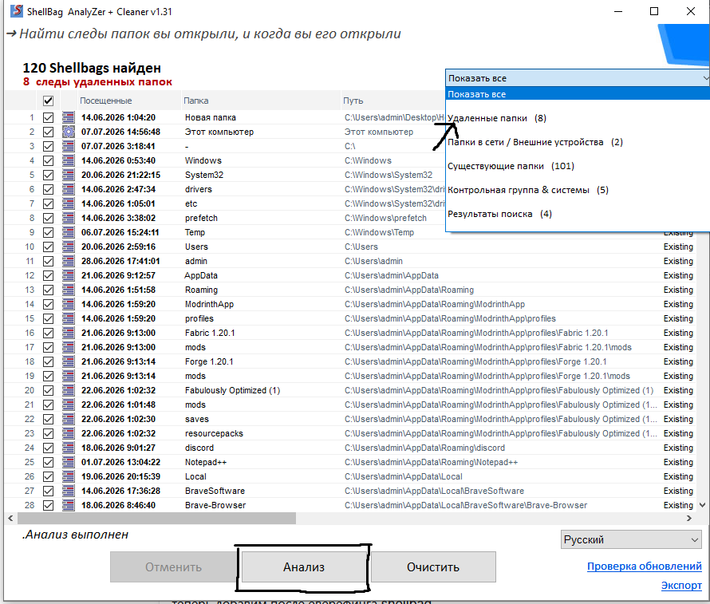
Интерфейс ShellBag Analyzer — пример анализа удаленных папок
🖥️ System Informer – анализ памяти
Шаг 1: Запустите System Informer с правами администратора. В строке поиска введите javaw.exe.
Важно: Если в результатах отображается несколько процессов javaw.exe, отсортируйте их по столбцу "Size" и выберите процесс с наибольшим весом. Именно он соответствует активному экземпляру Minecraft.
Шаг 2: Дважды кликните по выбранному процессу. В открывшемся окне перейдите на вкладку General и обратите внимание на поле Started — здесь указано точное время запуска Minecraft. Это позволяет определить, когда игрок начал сессию.
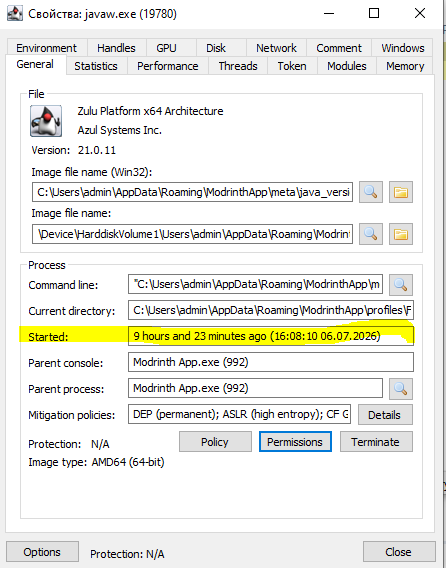
Вкладка General — смотрим время запуска (Started)
Шаг 3: Перейдите на вкладку Memory, затем в меню Options выберите пункт Strings....
В поле Minimum length установите значение 4.
Отметьте все чекбоксы, за исключением Extended Unicode.
Дождитесь завершения сканирования — это может занять несколько секунд в зависимости от загруженности системы.
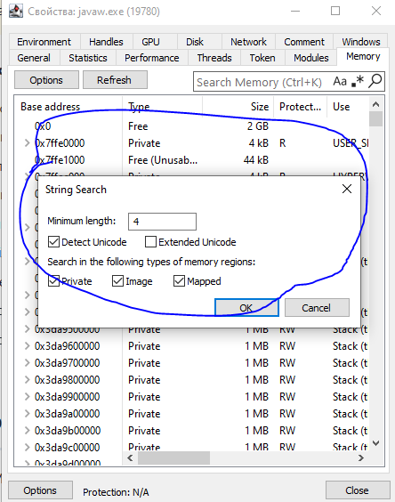
Настройки Strings в System Informer
Шаг 4: После окончания анализа нажмите кнопку Filter в левом нижнем углу, выберите режим Contains (case-insensitive) и поочередно вводите строки из списков ниже.
Принцип работы: Если в памяти процесса присутствуют указанные строки, это свидетельствует о загрузке запрещенного ПО. Обнаружение хотя бы одного совпадения является достаточным основанием для бана.
⚠️ Важно: Обнаружение любой из перечисленных строк в памяти процесса javaw.exe является безусловным доказательством использования читов. В таком случае игрок подлежит блокировке.
🔍 StringsParser – анализ системных служб
StringsParser — инструмент для анализа строк в системных службах Windows, разработанный Orbdiff. Утилита сканирует такие службы, как diagtrack, appinfo, dps, dcomlaunch и другие, извлекая из них все найденные исполняемые файлы (.exe) и другие объекты.
Перейдите по ссылке выше и скачайте последнюю версию программы из раздела Releases.
Запустите исполняемый файл — программа не требует установки или сложной настройки.
Утилита автоматически проанализирует указанные системные службы и отобразит все найденные строки, файлы и пути.
💡 Основные возможности:
Парсинг строк из системных служб: diagtrack, appinfo, dps, dcomlaunch и других.
Обнаружение и вывод всех найденных .exe, .dll и других файлов.
Возможность загрузки пользовательского файла со строками для анализа (например, дампа памяти).
Проверка цифровых подписей файлов.
Поддержка YARA-правил для расширенного поиска.
Интуитивно понятный интерфейс — освоение занимает всего пару минут.
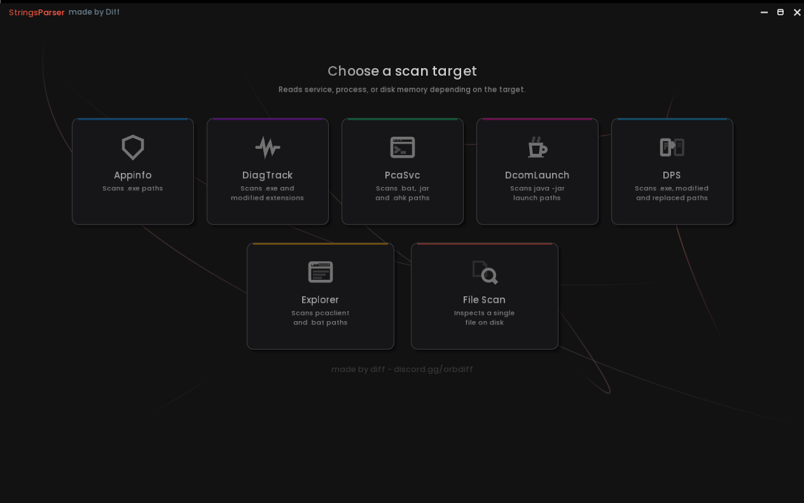
Интерфейс StringsParser — пример работы программы
📋 Echo Journal – анализ журналов файловой системы
Echo Journal — это инструмент для работы с журналами файловой системы Windows (USN Journal). Утилита позволяет отслеживать, какие файлы создавались, изменялись или удалялись на диске за определённый период времени.
Показывает, когда появлялись и исчезали файлы клиентов, конфиги, архивы и другие артефакты.
Позволяет находить следы удалённых файлов — даже если игрок уже их убрал.
Является аналогом JournalTrace, но с более современным и удобным интерфейсом для поиска.
⚙️ Как пользоваться:
Скачайте программу по ссылке выше.
Запустите исполняемый файл.
В строку поиска вводите интересующие вас типы файлов: .jar, .dll, .exe и другие.
При необходимости используйте дополнительные фильтры для уточнения поиска:
🗑️ Deleted📄 Created📝 Renamed From📝 Renamed To🔒 Closed📊 Data changed
Deleted — показывает только удалённые файлы.
Created — показывает только созданные файлы.
Renamed From — показывает файлы, которые были переименованы (старое имя).
Renamed To — показывает файлы, которые были переименованы (новое имя).
Closed — показывает файлы, которые были закрыты.
Data changed — показывает файлы, содержимое которых было изменено.
💡 Совет: Комбинируйте фильтры для более точного поиска. Например, включите Deleted и введите .jar, чтобы найти все удалённые jar-файлы. Или используйте Renamed From и Renamed To, чтобы отследить переименование подозрительных файлов.
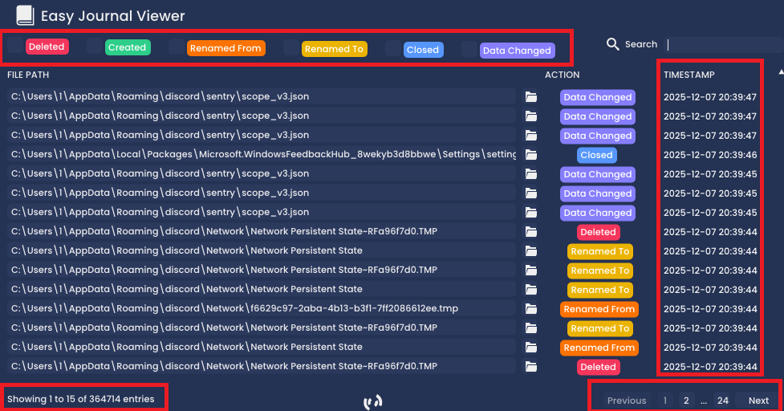
Интерфейс Echo Journal — пример поиска удалённых файлов
🔍 BAMReveal – анализ BAM-записей реестра
BAMReveal — это инструмент для анализа записей BAM (Background Activity Moderator) в реестре Windows. По сути, программа читает данные из ветки реестра HKLM\SYSTEM\CurrentControlSet\Services\bam\State\UserSettings и отображает их в понятном виде, автоматически конвертируя пути \Device\ в нормальные буквы дисков (C:\, D:\ и т.д.).
Парсит BAM-записи реестра, извлекая временные метки выполнения, пути к исполняемым файлам и записи, связанные с пакетами.
Автоматически преобразует пути вида \Device\HarddiskVolumeX\... в нормальные пути с буквами дисков (C:\, D:\ и т.д.).
Проверяет цифровые подписи файлов и определяет их статус: Signed (подписан), Unsigned (не подписан), Fake Signature (фальшивая подпись), Cheat (чит).
Обнаруживает подмены файлов с помощью USN Journal — если путь подсвечен красным, значит была обнаружена замена.
Включает общие детекты на основе YARA-правил.
Позволяет искать информацию по всей таблице через встроенный поиск.
BAMReveal является улучшенным аналогом BAMParser — он не только парсит BAM-записи, но и предоставляет расширенные возможности:
🔍 Проверка цифровых подписей
🔄 Обнаружение замен файлов через USN Journal
🧩 Интеграция с YARA-правилами
📊 Анализ времени работы BAM-службы
⚙️ Как пользоваться:
Скачайте программу по ссылке выше (раздел Releases).
Запустите исполняемый файл.
Программа автоматически прочитает BAM-записи из реестра и отобразит их в виде таблицы.
Используйте встроенные фильтры и кнопки для уточнения анализа:
⏱️ Post Logon🚫 Show Untrusted❓ Show Not Found
Post Logon — показывает все записи, выполненные после входа пользователя в систему.
Show Untrusted — отображает записи, отмеченные как: Unsigned (не подписанные), Cheat-related (связанные с читами), Fake signed (с фальшивой подписью).
Show Not Found — показывает пакеты и пути, которые не удалось разрешить или которые отсутствуют на диске.
🛠️ Дополнительные кнопки:
Deleted BAM — ищет BAM-записи в системном журнале и сравнивает их с текущими записями реестра. Если запись есть в одном месте, но отсутствует в другом — это флаг, помогающий обнаружить возможное удаление записей BAM-реестра.
Registry BAM — показывает ключи BAM-реестра с запрещёнными разрешениями.
BAM Info — отображает время загрузки системы, временную метку создания bam.sys и время запуска BAM-драйвера после загрузки. Полезно для проверки временных несоответствий и возможных взломов.
💡 Интерфейс: Весь инструмент построен на Dear ImGui, что делает интерфейс чистым, понятным и без лишних элементов — всё только по делу.
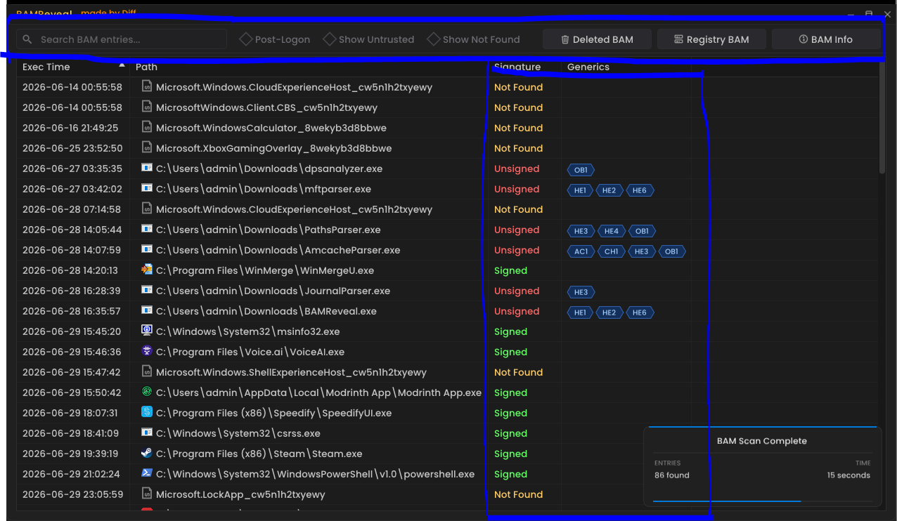
Интерфейс BAMReveal — пример анализа BAM-записей реестра
🔍 JliveF – JVMTI Detector
JliveF — это Windows-тулкит для screenshare-проверок, объединяющий несколько утилит в одном интерфейсе. Основной и наиболее востребованный модуль — JVMTI Detector, который ищет сигнатуры JVMTI/JNI-инжектов в процессах javaw.exe.
Выберите процесс javaw.exe, соответствующий Minecraft.
Дождитесь завершения проверки и изучите результат.
⚠️ Исключение: Если игрок использует лаунчер Modrinth App, JVMTI Detector может давать ложные срабатывания. В таком случае не используйте этот модуль для проверки — результаты будут недостоверными.
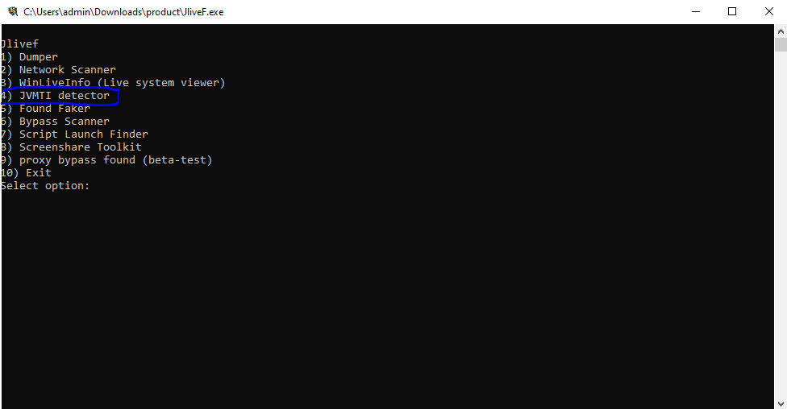
Интерфейс JliveF — модуль JVMTI Detector
📁 PrefetchView++ – анализ Prefetch файлов
PrefetchView++ — это продвинутый парсер Windows Prefetch для криминалистического анализа и поиска угроз. Программа является улучшенным аналогом WinPrefetchView и предоставляет детальную информацию о .pf файлах: временные метки выполнения, импортируемые файлы, метаданные исполняемых файлов, размеры, количество запусков и многое другое.
Парсит Windows Prefetch файлы, извлекая временные метки выполнения, импортируемые файлы, метаданные исполняемых файлов, размеры и количество запусков.
Автоматически преобразует пути \Volume-{GUID}\ в стандартные пути с буквами дисков (C:\, D:\ и т.д.).
Проверяет цифровые подписи для основных исполняемых файлов и импортируемых файлов, обнаруживая: Unsigned (не подписан), Fake signatures (фальшивая подпись), Cheat-related (связано с читами).
Включает общие детекты на основе YARA-правил — клик по записи показывает точное сработавшее правило.
Встроенный поиск по основной таблице и таблице импортов.
⚙️ Как пользоваться:
Скачайте программу по ссылке выше (раздел Releases).
Запустите исполняемый файл.
Программа автоматически проанализирует Prefetch файлы и отобразит их в виде таблицы.
Используйте встроенные фильтры для уточнения анализа:
⏱️ Post Logon🚫 Show Untrusted❓ Show Not Found
Post Logon — показывает все записи, выполненные после входа пользователя в систему.
Show Untrusted — отображает записи, отмеченные как: Unsigned (не подписанные), Fake signed (с фальшивой подписью), Cheat-related (связанные с читами).
Show Not Found — показывает пути, которые не удалось разрешить или которые отсутствуют на диске.
🛠️ Дополнительные кнопки:
Prefetch Report — показывает возможные байпасы: Registry Prefetch, Same hash detections, Suspended threats и другие подозрительные артефакты.
Sysmain Status — отображает время работы службы SysMain и время перезапуска.
USN Journal — проверяет, были ли папки или файлы Prefetch удалены или переименованы.
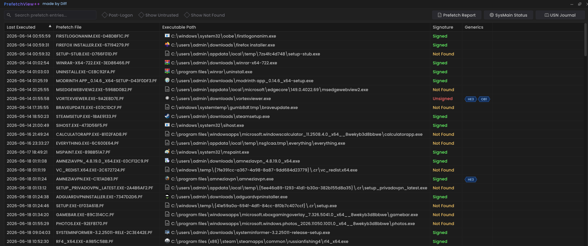
Интерфейс PrefetchView++ — пример анализа Prefetch файлов
💾 USBDriveLog – история подключения USB
USBDriveLog — это утилита от Nir Sofer, которая отображает историю подключения USB-устройств к компьютеру под управлением Windows 10/11.
Unplug Time — время отключения (главный параметр для проверяющего)
Device ID — идентификатор устройства
Device Capacity — ёмкость устройства
🎯 Для проверяющего важно: Обращайте внимание на колонку Unplug Time — время отключения USB-устройства. Это может помочь определить, когда игрок отключал флешку с читом или внешний накопитель.
⚙️ Как пользоваться:
Скачайте программу по ссылке выше (это standalone .exe, установка не требуется).
Запустите USBDriveLog.exe.
Программа автоматически отобразит историю подключения USB-устройств с вашего компьютера.
Для анализа с удалённого ПК используйте F7 → выберите Remote Computer.
Сохраните результаты через Ctrl+S или скопируйте в буфер обмена Ctrl+C.
💡 Советы:
Программа работает только на Windows 10 и Windows 11.
Использует журналы событий: Microsoft-Windows-Partition/Diagnostic и Microsoft-Windows-Storsvc/Diagnostic.
Если вы хотите видеть названия вендора и продукта, скачайте файл usb.ids с linux-usb.org и положите его в папку с программой.
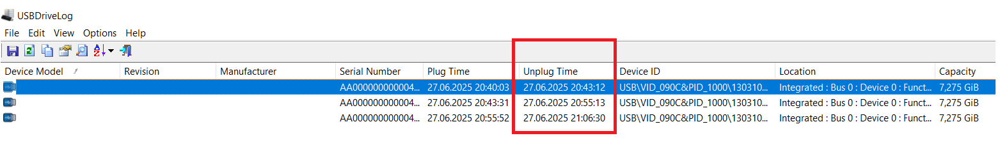
Интерфейс USBDriveLog — пример истории подключения USB
📋 UserAssistView – анализ запущенных .exe
UserAssistView — это удобный парсер артефакта UserAssist, который автоматически расшифровывает пути в реестре и показывает все .exe файлы, которые когда-либо запускались на компьютере.
🎯 Для проверяющего это важно, потому что:
UserAssist хранит историю запуска программ в зашифрованном виде.
UserAssistView расшифровывает эти данные и показывает, какие .exe файлы запускал игрок.
Если в списке есть подозрительные названия (читы, инжекторы, лоадеры) — это красный флаг.
Даже если игрок удалил сам файл, запись о его запуске может остаться в UserAssist.
📋 Какая информация выводится:
Путь к .exe файлу — полный путь к запущенной программе
Время запуска — когда программа была запущена
Количество запусков — сколько раз запускалась программа
Время последнего запуска — когда программа запускалась в последний раз
⚙️ Как пользоваться:
Скачайте программу UserAssistView.
Запустите исполняемый файл.
Программа автоматически прочитает UserAssist-записи из реестра и расшифрует их.
В таблице вы увидите все .exe файлы, которые запускались на компьютере.
Особое внимание обратите на подозрительные названия:
Названия читов (Prestige, Cortex, Doomsday, Vape и т.д.)
Непонятные названия с цифрами или рандомными символами
Файлы из папок Temp, AppData, Windows
🚫 Что искать:
Любые .exe файлы с названиями читов — это прямое доказательство.
Непонятные .exe файлы в папке Temp — часто туда загружаются временные лоадеры.
Файлы, которые запускались незадолго до проверки — игрок мог использовать чит прямо перед SS.
Если в списке есть файлы, которых нет на диске — игрок мог их удалить, но след остался.
💡 Дополнительно:
UserAssistView показывает не только .exe, но и другие файлы, которые запускались через проводник (например, .jar, .bat, .vbs).
Программа не требует установки — просто скачайте и запустите.
Вы можете сохранить результаты в файл для дальнейшего анализа.
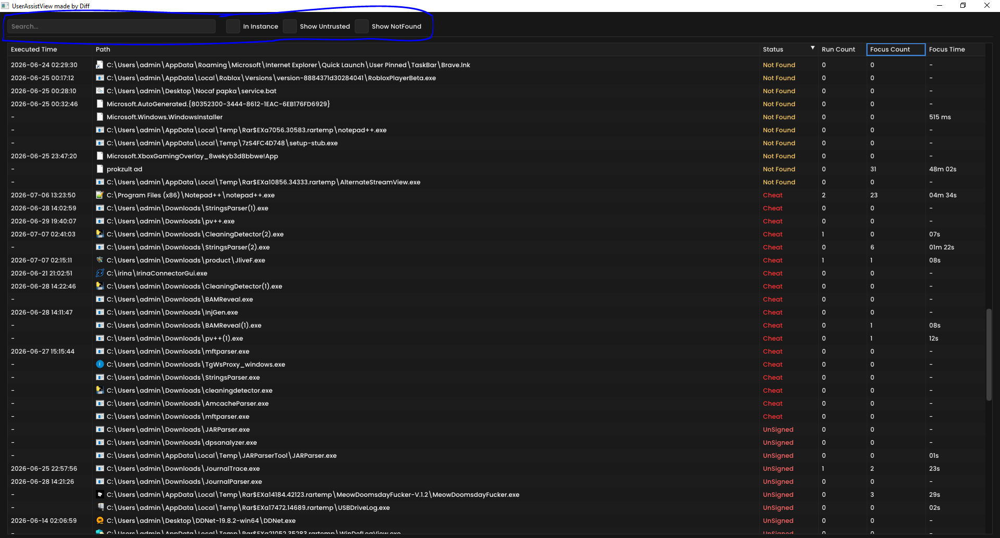
Интерфейс UserAssistView — пример анализа запущенных .exe файлов
📋 ExecutedProgramsList – все запущенные программы
ExecutedProgramsList — это утилита от Nir Sofer, которая находит и показывает все программы и пакетные файлы (.bat), которые когда-либо запускались на компьютере. Программа собирает информацию из нескольких источников:
Реестр Windows (MuiCache, MUICache, Compatibility Assistant)
Папка Prefetch (C:\Windows\Prefetch)
🎯 Для проверяющего это важно, потому что:
Показывает все запущенные .exe и .bat файлы на компьютере.
Позволяет обнаружить скрытые читы, которые игрок мог запускать через бат-файлы.
Даже если игрок удалил файл, запись о запуске может остаться в реестре или Prefetch.
Время создания/изменения — дата создания или изменения файла
Версия продукта — информация о продукте (если доступна)
Название продукта — название программы
Компания — разработчик программы
Last Executed On — время последнего запуска
⚙️ Как пользоваться:
Скачайте программу по ссылке выше (это standalone .exe, установка не требуется).
Запустите ExecutedProgramsList.exe.
Для удобной сортировки сделайте следующее:
Нажмите на заголовок колонки «Last Executed On»дважды (или столько раз, сколько нужно), пока дата не станет самой свежей (сортировка по убыванию).
Затем нажмите на заголовок колонки «File Description»один раз для сортировки по алфавиту.
Теперь просматривайте список — самые свежие программы будут сверху, и вы сможете легко находить подозрительные.
Особое внимание обратите на:
Подозрительные .exe файлы с названиями читов.
.bat файлы, которые могли использоваться для запуска читов.
Файлы, которые запускались незадолго до проверки.
Файлы с непонятными или рандомными названиями.
🚫 Что искать:
Любые .exe с названиями читов (Prestige, Cortex, Doomsday, Vape, и т.д.) — прямое доказательство.
Непонятные .bat файлы — часто используются для запуска инжекторов.
Файлы из папки Temp — временные лоадеры часто загружаются туда.
Файлы, которые запускались в день проверки — если игрок использовал чит прямо перед SS, это будет видно.
💡 Дополнительно:
Программа собирает данные из нескольких источников, включая Prefetch и реестр, поэтому она находит больше файлов, чем другие аналоги.
Особенно полезна для поиска .bat файлов — многие читы запускаются именно через бат-файлы.
Вы можете сохранить результаты в файл для дальнейшего анализа.
Работает на всех версиях Windows начиная с XP.
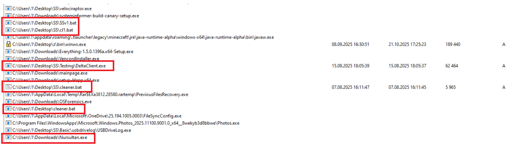
Интерфейс ExecutedProgramsList — пример анализа запущенных программ
🌐 BrowserDownloadsView – история скачанных файлов
BrowserDownloadsView — это утилита от Nir Sofer, которая показывает историю скачанных файлов из браузеров в удобной таблице. Программа поддерживает Chrome, Firefox и все браузеры на их основе (Opera, Yandex, Vivaldi, Brave, Edge Chromium и другие).
Скачивания, которые происходили незадолго до проверки.
Файлы, которых уже нет на диске (колонка File Exists = No).
🚫 Что искать:
Любые файлы с названиями читов — прямое доказательство.
Скачивания из подозрительных источников — неизвестные сайты, Discord, Mediafire, и т.д.
Файлы, скачанные в день проверки — игрок мог скачать чит прямо перед SS.
Файлы, которые были удалены — если файл скачан, но его нет на диске — игрок мог его удалить после использования.
💡 Дополнительно:
Программа поддерживает все популярные браузеры на основе Chromium и Firefox.
Можно загружать историю с удаленного компьютера или внешнего диска.
Есть возможность экспортировать результаты в HTML, CSV, XML, JSON.
Можно проверить файл на VirusTotal прямо из программы.
Важно: Файлы, скачанные в режиме инкогнито/приватном режиме, не отображаются.
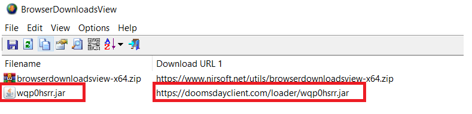
Интерфейс BrowserDownloadsView — пример истории скачанных файлов
🧹 Clean‑Detecting – анализ следов очистки
Clean‑Detecting — это утилита для комплексного анализа состояния системы и выявления следов очистки активности. Помогает обнаружить, пытался ли игрок скрыть свои действия.
Программа автоматически проанализирует систему и отобразит результаты.
Изучите каждый раздел на наличие подозрительных признаков очистки.
⚠️ Важно: Если программа показывает, что недавно были очищены shellbags, журналы событий или корзина — это может свидетельствовать о попытке скрыть следы использования читов.
💡 Совет: Обращайте внимание на дату изменения в разделах Recent-файлов и consolehost_history. Если дата изменения совпадает со временем проверки — игрок мог что-то чистить.
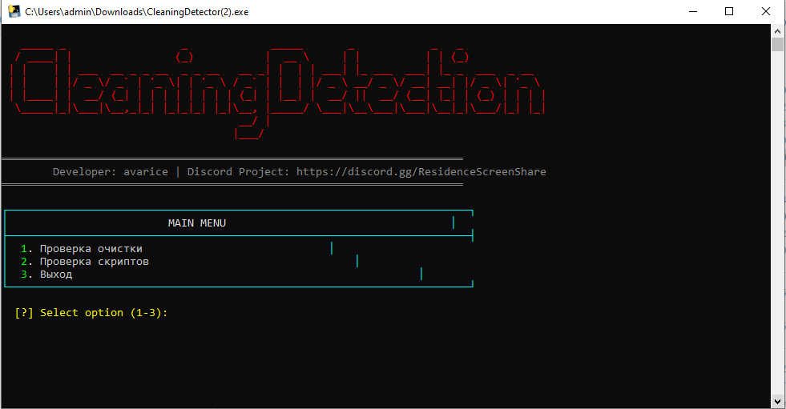
Интерфейс Clean‑Detecting — пример анализа следов очистки
🛡️ WinDefLog – логи Microsoft Defender
WinDefLogView — это небольшая утилита от Nir Sofer, которая читает и расшифровывает логи Microsoft Defender (Windows Defender). Она показывает, что именно находил встроенный антивирус Windows на компьютере игрока.
Detection User — пользователь, под которым было обнаружение
Action — действие, которое было предпринято
Origin — источник угрозы
🎯 Для проверяющего важно: Утилита помогает определить, обнаруживал ли Windows Defender на компьютере игрока файлы, которые могут быть связаны с читами. Если в логах есть подозрительные файлы (.jar, .exe, .dll с названиями читов) — это повод для детальной проверки.
⚙️ Как пользоваться:
Скачайте программу по ссылке выше (это standalone .exe, установка не требуется).
Запустите WinDefLogView.exe.
Программа автоматически отобразит логи обнаружений Windows Defender на вашем компьютере.
Для анализа с удалённого ПК используйте F7 → выберите Remote Computer.
Сохраните результаты через Ctrl+S или скопируйте в буфер обмена Ctrl+C.
💡 Советы:
Программа работает на Windows 10 и Windows 11.
Использует журнал событий: Microsoft-Windows-Windows Defender/Operational.
Если Defender находил файлы с названиями читов — это весомый аргумент против игрока.
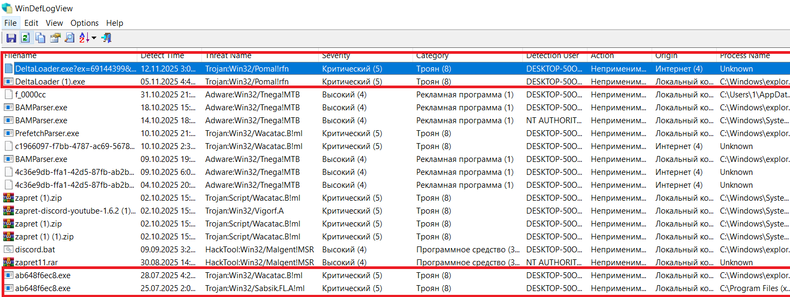
Интерфейс WinDefLogView — пример логов обнаружений Windows Defender